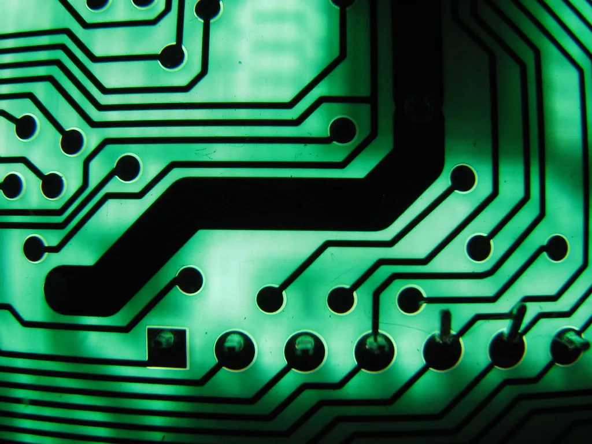

SK하이닉스·삼성전자, 엔비디아 '루빈'용 HBM4 공급 본격화
차세대 고대역폭메모리(HBM4)를 둘러싼 SK하이닉스와 삼성전자의 공급 경쟁이 하반기 들어 새로운 국면에 접어들고 있다. 엔비디아가 올해 새로 선보이는 AI 가속기 '베라 루빈'은 HBM4를 탑재하는 사실상 유일한 제품으로 꼽히는데, 이 초도 물량 공급에서 SK하이닉스가 약 65%, 삼성전자가 나머지 35%가량을 확보한 것으로 업계는 추정하고 있다. 6세대 메모리인 HBM4가 실제 완제품에 탑재돼 시장에 풀리는 첫 사례인 만큼, 이번 물량 배분 결과는 앞으로 이어질 HBM4 경쟁의 초반 흐름을 가늠하는 잣대로 받아들여지는 분위기다.
업계에 따르면 SK하이닉스는 이미 지난 3월부터 엔비디아를 포함한 주요 고객사에 HBM4 공급을 시작했다. 삼성전자도 앞서 세계 최초로 HBM4 양산 출하를 알린 데 이어, 엔비디아의 베라 루빈용 최종 품질 검증을 통과하고 6월부터 양산 제품 공급에 들어간 것으로 전해졌다. 두 회사 모두 양산 자체는 이미 시작한 상태지만, 실제 출하량이 유의미한 규모로 늘어나는 시점은 이르면 올 하반기가 될 것이라는 게 업계의 대체적인 전망이다.

시장 전망 기관들은 HBM4 시장에서 SK하이닉스가 55%, 삼성전자가 28%, 미국 마이크론이 17% 안팎의 점유율을 나눠 가질 것으로 내다보고 있다. 다만 올해 전체 HBM 출하량에서는 아직 이전 세대인 HBM3E 비중이 3분의 2가량으로 더 크고, HBM4 수요가 본격적으로 흡수되는 시점은 3분기 이후가 될 것이라는 관측이 우세하다. 즉 HBM4는 이제 막 상용화 초입 단계에 들어섰을 뿐, 시장의 무게중심이 완전히 넘어가기까지는 다소 시간이 더 필요하다는 뜻이다.
HBM4 경쟁이 치열해지는 배경에는 엔비디아를 정점으로 한 AI 가속기 시장의 급성장이 자리한다. AI 모델 학습과 추론에 필요한 연산량이 계속 늘면서, 이를 뒷받침할 고성능 메모리 수요도 함께 커지고 있다. HBM은 여러 개의 D램을 수직으로 쌓아 올려 데이터 처리 속도를 끌어올린 제품으로, 세대가 올라갈수록 대역폭과 용량이 커지는 대신 설계와 생산 난도도 함께 높아진다. HBM4부터는 메모리를 제어하는 로직 다이(logic die) 설계에 파운드리 공정까지 결합되는 만큼, 단순 메모리 제조를 넘어선 종합적인 기술력 싸움으로 성격이 바뀌었다는 평가가 나온다.

이 때문에 업계에서는 이번 베라 루빈 초도 물량 배분 결과를 두고, 그동안 HBM 시장에서 독주해 온 SK하이닉스의 우위가 이어지되 삼성전자가 두 자릿수 점유율로 추격 발판을 마련했다는 해석이 나온다. 삼성전자로서는 HBM3E 세대에서 다소 뒤처졌던 것과 비교하면 유의미한 반등이라는 평가지만, SK하이닉스와의 격차를 완전히 좁히기까지는 추가적인 수율 개선과 고객사 확대가 관건이 될 것으로 보인다.
업계는 하반기 이후 HBM4 출하가 본격화하면 국내 반도체 업체들의 실적에도 직접적인 영향을 줄 것으로 보고 있다. 이미 올해 상반기 메모리 가격 상승과 맞물려 두 회사 모두 사상 최대 수준의 실적을 기록한 바 있어, HBM4向 매출 비중이 본격적으로 반영되는 하반기 실적에 시장의 관심이 쏠리고 있다. 다만 로직 다이 설계 등 신규 공정 도입에 따른 수율 안정화 여부가 변수로 남아 있어, 실제 물량 확대 속도는 분기별 실적 발표를 통해 확인될 전망이다.